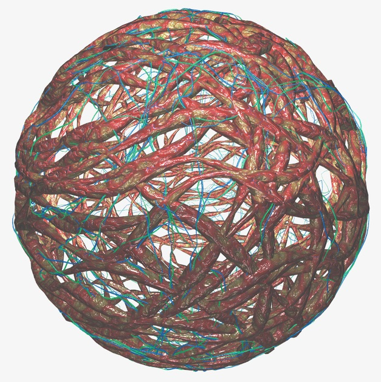

Protobyte Library Example

Description: This image was creted using the Protobyte library. Particles were shot at a sphere, colliding with the surface. The particles where then connected a paths and textured tendrils were extruded along the paths.